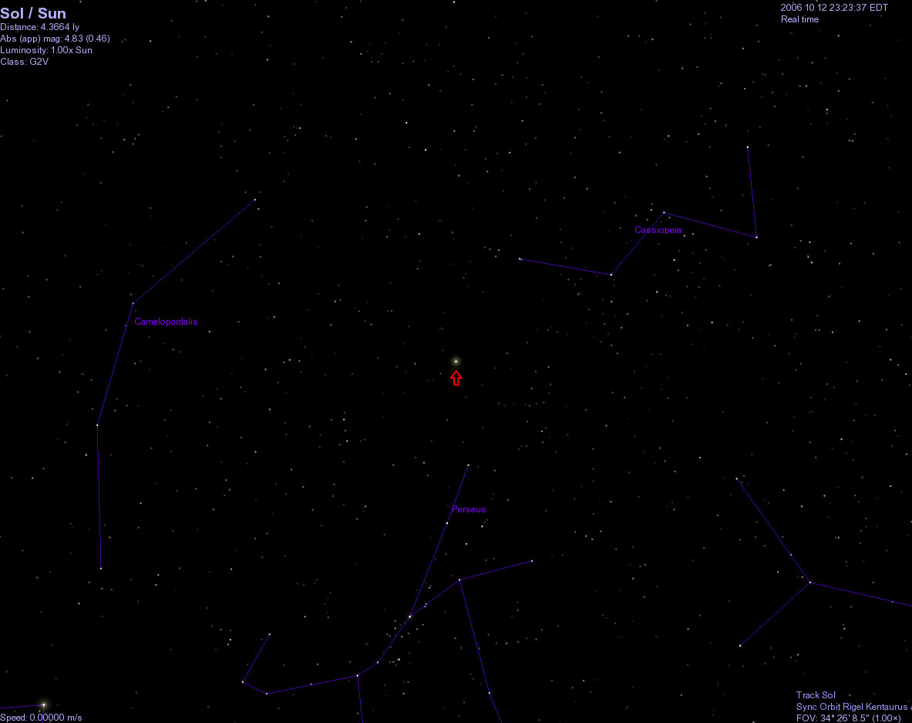

太阳
银河系猎户座悬臂的一颗普通恒星
太阳
What is the Sun?
太阳是位于太阳系中心的恒星，它几乎是热等离子体与磁场交织着的一个理想球体。
太阳目前正在穿越银河系内部边缘猎户臂的本地泡区中的本星际云。在距离地球17光年的距离内有50颗最邻近的恒星系（与太阳距离最近的恒星是称作比邻星的红矮星，大约4.2光年）。
太阳是一颗黄矮星，黄矮星的寿命大致为100亿年，目前太阳大约45.7亿岁。 在大约50至60亿年之后，太阳内部的氢元素几乎会全部消耗尽，太阳的核心将发生坍缩，外层将发生膨胀，并且把一部分外层大气释放到太空中。当转向新元素的过程结束时，太阳的质量将稍微下降，外层将延伸到地球或者火星目前运行的轨道处。
太阳在哪里
Where is the Sun?
太阳只是宇宙中一颗十分普通的恒星，但它却是太阳系的中心天体。太阳系中，包含我们的地球在内的八大行星、一些矮行星、彗星和其它无数的太阳系小天体，都在太阳的强大引力作用下环绕太阳运行。太阳系的疆域庞大，仅以冥王星为例，其运行轨道距离太阳就将近40个天文单位，也就是60亿千米之遥远，而实际上太阳系的范围还要数十倍于此。
但是这样一个庞大的太阳系家族，在银河系中却仅仅只是十分普通的沧海一粟。银河系拥有至少1000亿颗以上的恒星，直径约10万光年。太阳位于银道面之北的猎户座旋臂上，距离银河系中心约30000光年，在银道面以北约26光年，它一方面绕着银心以每秒250公里的速度旋转，周期大概是2.5亿年，另一方面又相对于周围恒星以每秒19.7公里的速度朝着织女星附近方向运动。 太阳也在自转，其周期在日面赤道带约25天；两极区约为35天。
太阳正在穿越银河系内部边缘猎户臂的本地泡区中的本星际云。在距离地球17光年的距离内有50颗最邻近的恒星系（距离最近的一颗恒星是红矮星，被称为比邻星，距太阳大约4.2光年），太阳的质量在这些恒星中排在第四。太阳在距离银河中心24000至26000光年的距离上绕着银河公转，从银河北极鸟瞰，太阳沿顺时针轨道运行，大约2亿2500万至2亿5000万年绕行一周。由于银河系在宇宙微波背景辐射（CMB）中以550公里/秒的速度朝向长蛇座的方向运动，这两个速度合成之后，太阳相对于CMB的速度是370公里/秒，朝向巨爵座或狮子座的方向运动。

在南门二（比邻星所在的三合星系统）的位置观看我们的太阳时，太阳仅仅是一颗视星等为0.5等的恒星。
公转与自转
Revolution
公转
太阳绕银河系中心公转，绕银河系中心公转周期约2.5×10⁸年。银河系中心可能有巨大黑洞，但它周围布满了恒星，所以看上去象“银盘”。这些恒星都绕“银核”公转。与地球公转不同，这些恒星公转每绕一周离“银核”会更近。
自转
太阳和其它天体一样，也在围绕自己的轴心自西向东自转，但观测和研究表明，太阳表面不同的纬度处，自转速度不一样。在赤道处，太阳自转一周需要25.4天，而在纬度40处需要27.2天，到了两极地区，自转一周则需要35天左右。这种自转方式被称为“较差自转”。
Eight things you must know about the Sun
质量
1.989e+30 kg
赤道半径
695,000 km
平均密度
1.410 gm/cm^3
自转周期
25-36 天
逃逸速度
618.02 km/sec
平均表面温度
6,000°C
年龄
45 亿年
主要化学成份
氢 92.1%、氦 7.8%、其他 0.1%
Learn More

太阳

地球

月亮